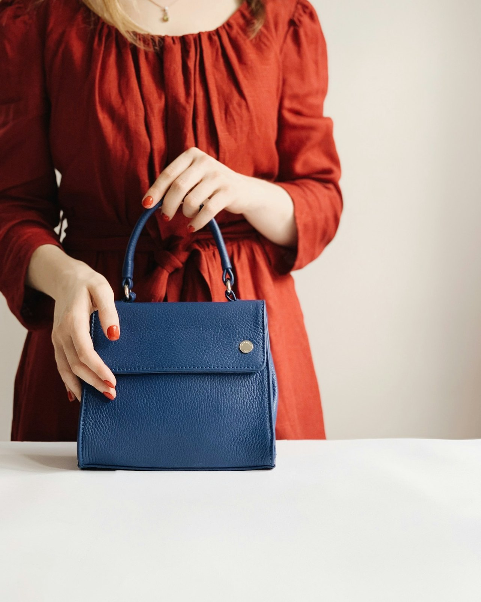

Dicono di noi
@studio.ortica
Dal 2019

Nome:
Giulia R.
Attività:
Fioraia
Servizio:
Gestione social
Messaggio:
Prima di lavorare con loro i social erano un pensiero in più. Avevamo idee, ma non riuscivamo a farle diventare un appuntamento fisso.
Ora tutto ha un senso. Il piano e il loro aiuto ci tengono presenti senza fatica, e arrivano ordini dai clienti che volevamo davvero.